In una bella giornata d'inverno io e Martina partiamo, subito dopo pranzo, da Sauris: direzione Morganlaite.
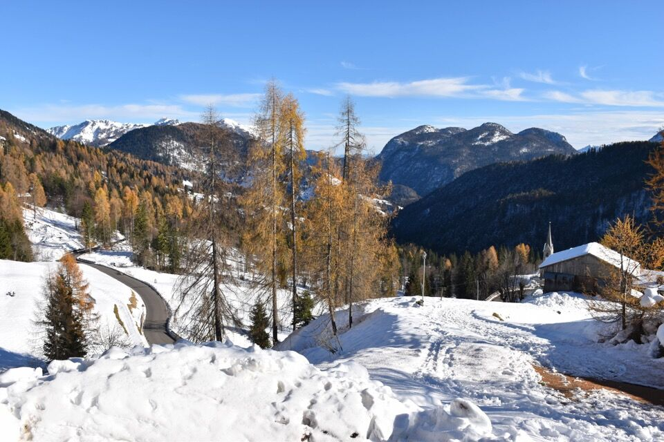I larici con la neve creano dei contrasti stupendi.
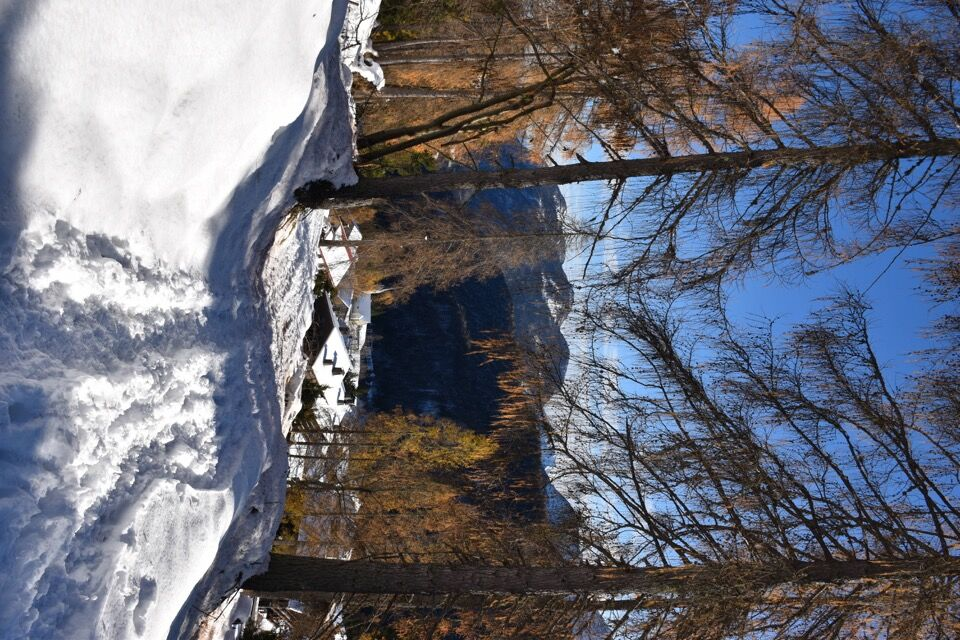 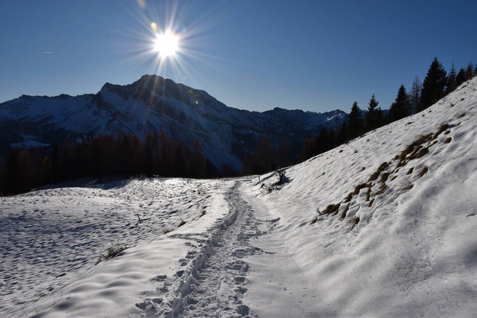Arriviamo a sella Festòns, dove il panorama subito si apre: è una gioia per gli occhi.
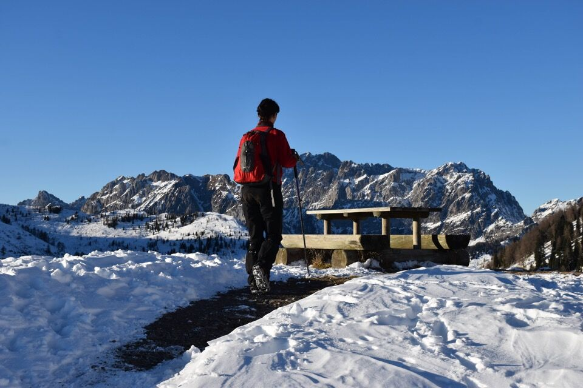Le crode già fanno bella mostra di sè; la luce pomeridiana ne risalta i dettagli e l'aspezza.
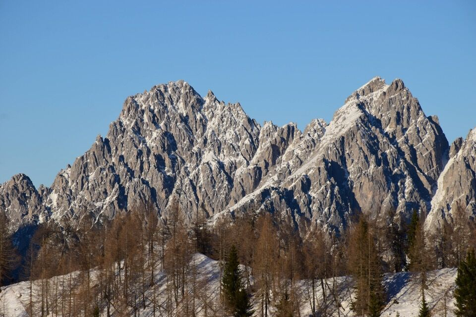Anche le prepotenti torri dei Clap emergono oltre i morbidi colli di Festòns.
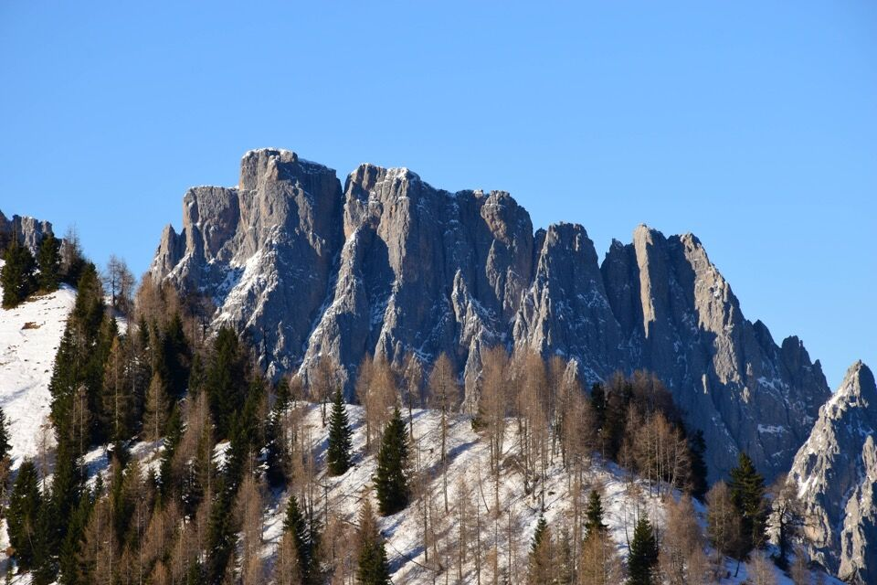E via su fino in cima!
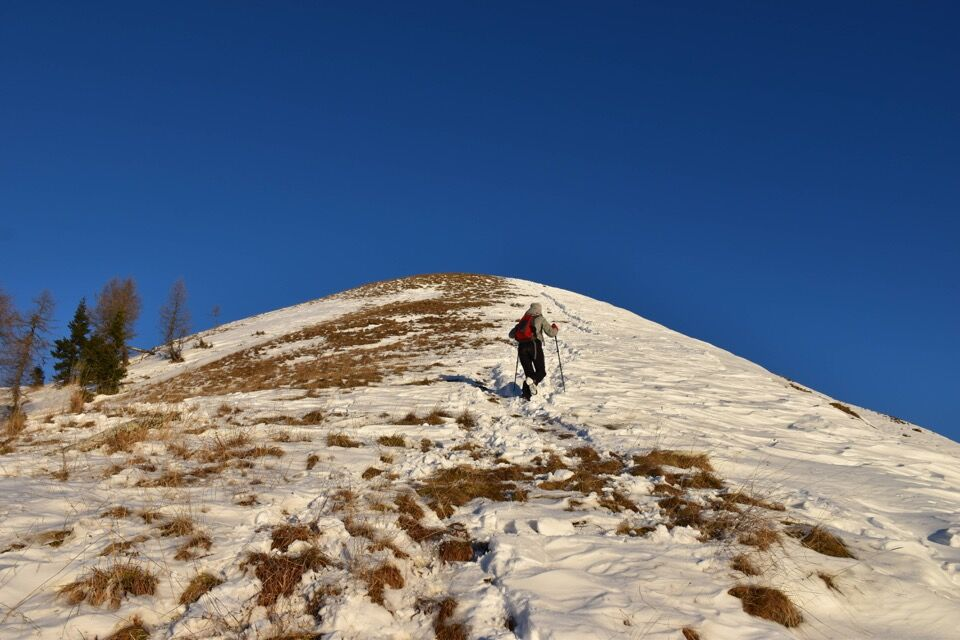La luce inizia a cambiare: Cogliàns e Cjanevate in una atmosfera immobile e surreale.
Le crode della cresta di Enghe; a dx il passo Èlbel, dove siamo stati un anno fa assieme a Martina in una piacevole camminata autunnale.
La parte occidentale dei Clap: dalla Crete Brusàde al misterioso Creton di Clap Piccolo, che tanto mi piacciono!
L'ora del tramonto è arrivata.
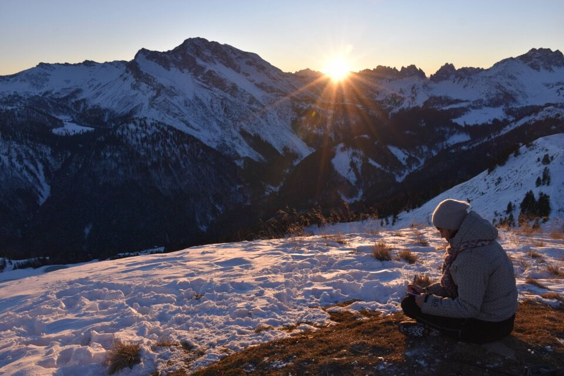 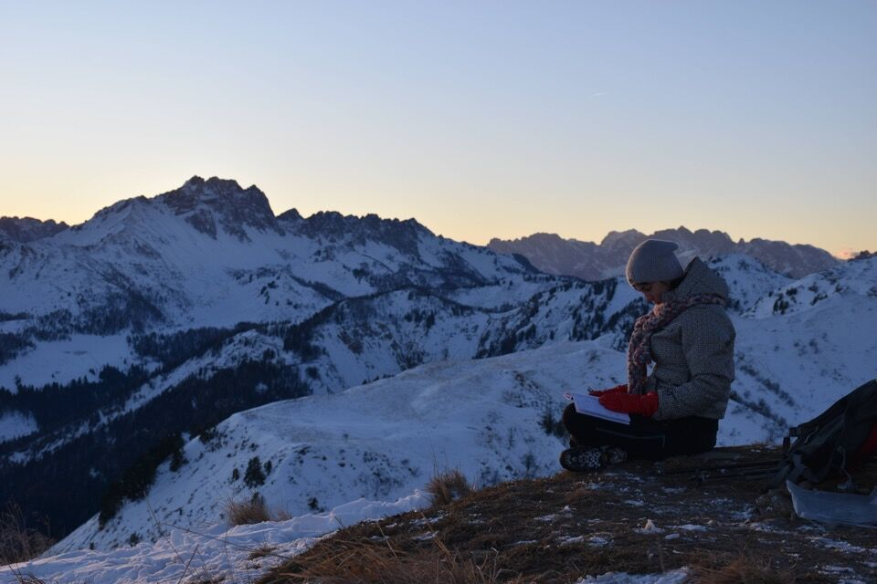 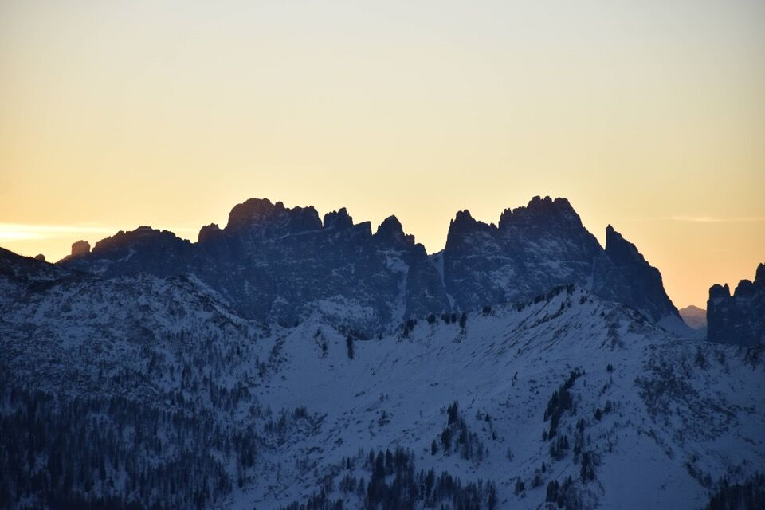Il Cimòn.
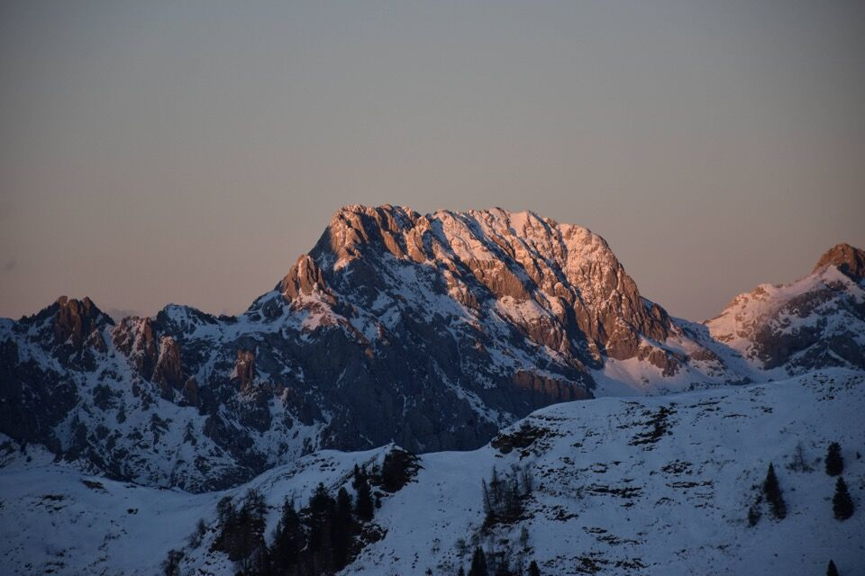Verso la Carnia (Col Gentile in mezzo) e le lontane Giulie.
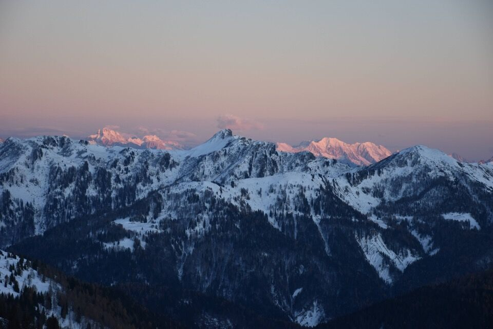 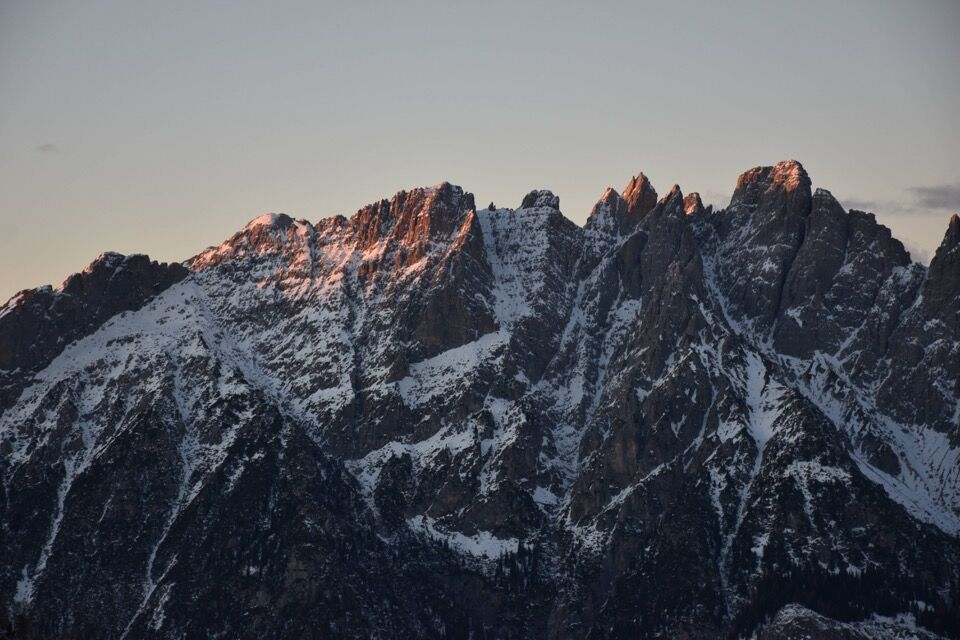Che spettacolo!
Qua ci si congela... purtroppo arriva l'ora di scendere.
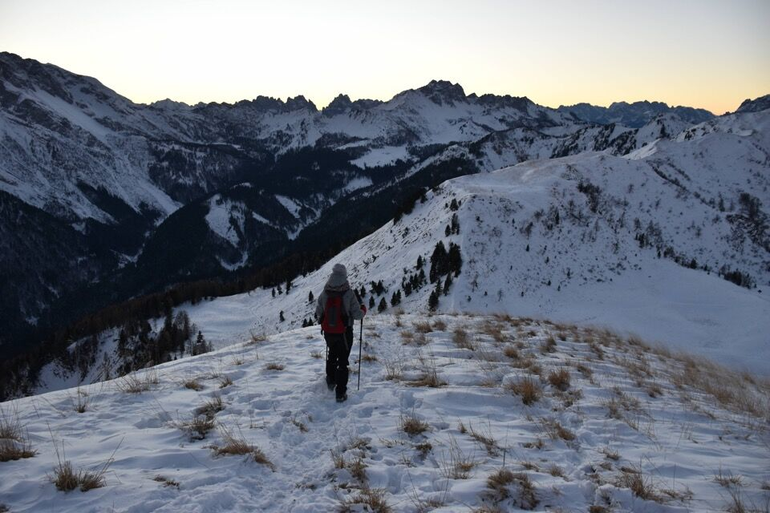 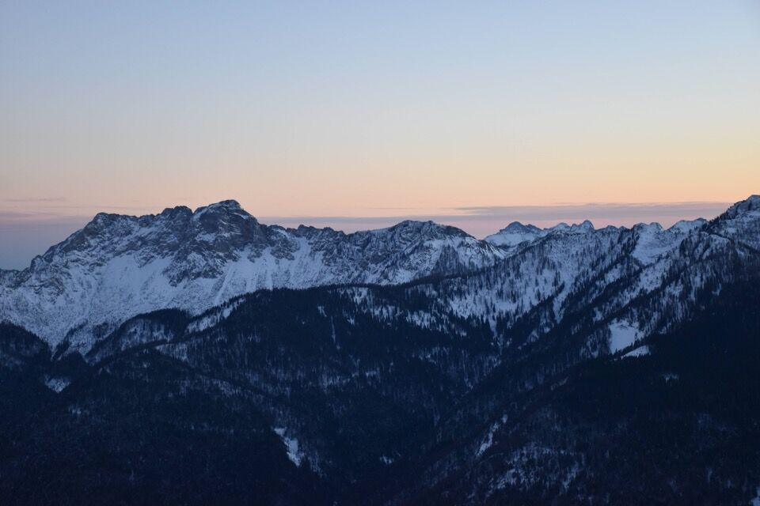Luna e Bìvera.

Un tramonto che non dimenticherò.